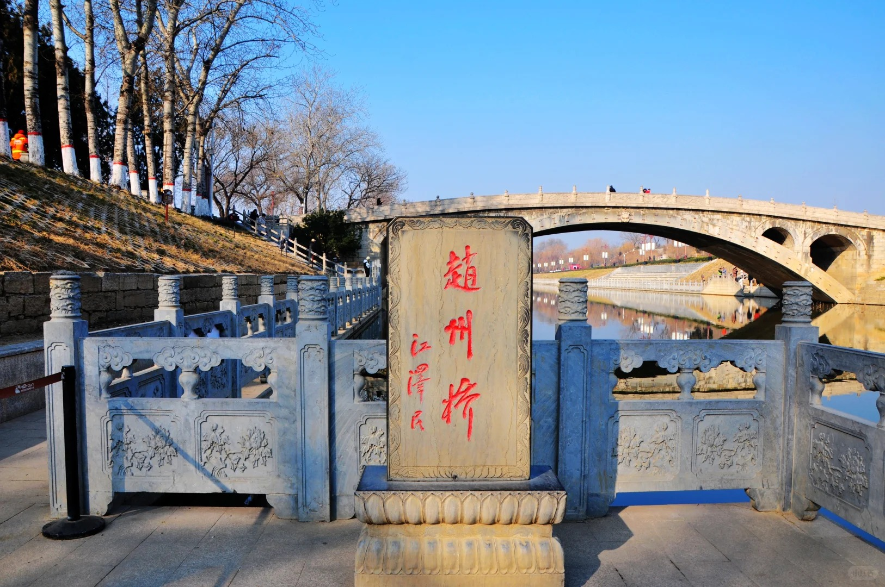

纵向并列砌券法：由28道独立拱券并列组成，便于局部维修，体现模块化思维
加固技术：使用"腰铁"和"横向铁拉杆"连接拱券，确保整体稳定性
主要材料：青白色石灰石，耐久性强
桥基处理：建于天然粗砂层，千年沉降小于5厘米
采用低桥身、大跨度的扁平圆弧拱，桥面平缓利于通行，展现高超计算能力
交互式3D模型，可多角度观察桥梁结构细节
这里显示信息内容，后期可以修改...
提示：点击并拖动可旋转模型，使用鼠标滚轮可缩放，点击上方按钮可切换预设视角。
点击红色数字按钮可查看桥梁各部位详细信息
石板模型三维展示，可观察石板上雕刻的精细纹样
这里显示石板纹样信息内容...
提示：点击并拖动可旋转模型，使用鼠标滚轮可缩放，点击上方按钮可切换预设视角。
点击红色数字按钮可查看石板各部位纹样详细信息
以实肩拱为基准100%进行对比
"制造奇特，人不知其所以为"
与"鲁班造桥"神话相关联，张果老试桥等传说已成为民间文学经典，体现建筑在文化中的深远影响